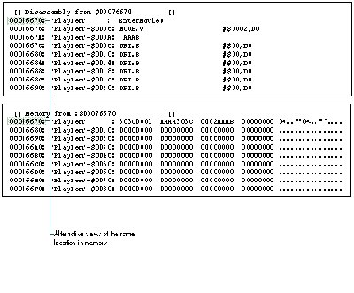
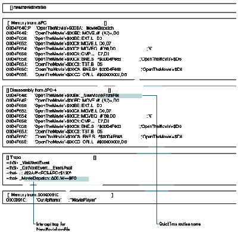
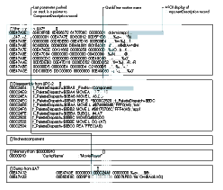

Intercepting the processing of a QuickTime routine enables you to debug the routine,
use the routine in new ways, and better understand QuickTime architecture. To
intercept the routine, you need to know something about its low-level implementation.
This article discusses the low-level implementation of QuickTime routines, and also
describes tools and programming techniques that can be used to debug, modify, and
analyze QuickTime routines. Some of these techniques take advantage of the Component
Manager, and their usefulness will extend beyond QuickTime as future managers
capitalize on components.
As QuickTime routines pass through some common locations, they're accessible to
your application or to a debugger. A QuickTime routine begins with its function name,
as used in your application and defined in the interface files. It usually compiles as an
A-trap and maybe some assembly glue. The routine may call other Macintosh
routines, be affected by global data structures, pass through a grafPort's bottleneck,
or pass through a component's main function. Because you have access to these
locations, you can intercept the processing of the routine, perform your own special
processing, and then allow the normal execution of the routine to continue.
This article's examples use MacsBug and TMON Pro (TMON Professional v. 3.0.1 from
Icom Simulations, Inc.) to intercept and analyze routines. The tools discussed create
resources for both debuggers, though in some situations you'll want to use one
debugger over the other. For example, the language extensibility of TMON Pro's
built-in assembler provides capabilities that other debuggers don't provide. Now let's
get into the practical aspects of analyzing and debugging QuickTime routines.
An A-trap is a two-byte opcode that always begins with the hexadecimal numeral A.
The remaining 12 bits in the opcode identify the particular routine you're calling,
along with other information about the call. A-traps interrupt the normal processing
of the CPU and cause it to jump through a low-memory vector to the trap dispatcher.
The trap dispatcher examines the bit pattern of the opcode to determine the actual
location of the Macintosh routine in memory, and then jumps to it. Almost all
Macintosh Toolbox routines use the A-trap mechanism to jump to their code.
In the early days of the Macintosh, there was one routine name per A-trap, but the
number of routines increased so dramatically that a second mechanism was introduced
to avoid exhausting all the A-traps. This mechanism uses the normal A-trap
mechanism to identify a grouping of routines(usually defined by a specific manager)
and uses selectors located on the stack or in a register to identify the specific routines
within the grouping. QuickTime uses only four A-traps:
Using four A-traps for over 500 routines is possible because the interface glue can
push routine selectors into registers or onto the stack. QuickTime picks the routine it
needs to execute from the value of the selector. For example, with the Movie Toolbox,
QuickTime uses a word in the D0 register. So 0x303C and xxxx (the two-byte
selector) appear before the A-trap in the Movies.h file. This disassembles into
MOVE.W #$xxxx, D0. If you want to find out what other opcodes mean, try using the
TMON Pro assembler as described in "TMON Pro Assembler Demo."
On a separate note, components implement routines through selectors as well. In some
ways, a component is not unlike an A-trap. The ramifications of this are discussed
later in the section "Bottlenecks."
A QuickTime routine's A-trap provides a common location that your debugger can
interact with. Traditionally, Macintosh developers have used MacsBug to investigate
the flow of A-traps in compiled applications. Knowing the sequence of A-traps needed
to implement specific functionality provides invaluable information exceeding the
scope of even the best documentation.
Let's see what happens when we take the simple QuickTime debugging approach of
breaking on the four A-traps. For example, start with the 0xAAAA trap. If you
perform an " atb _AAAA" and run MoviePlayer, MacsBug is continually invoked. You
can use the debugger to see the selector value that identifies the routine, but unless
you have the interface files in front of you or you memorize the selector values, you
won't be able to tell which QuickTime routine is being called. You can probably
memorize a few routines like EnterMovies, which has a selector value of 1. You could
even record all the A-trap routines (using theatr command), print to a file, and
compare the traps against the interface files. However, these methods leave a lot to be
desired.
Because there's no one-to-one correspondence between A-traps and routines, you need
some tools to facilitate trapping QuickTime applications. To take advantage of trapping
compiled applications, you'd like to be able to do the following:
USING 'MXBM' RESOURCESYou can set A-trap breaks on QuickTime routine names
by creating MacsBug macros in the form of 'mxbm' resources. Unfortunately, MacsBug
doesn't ship with the 'mxbm' resources for QuickTime, and creating those resources by
hand would be tedious at best. So I wrote debugit, an MPW tool that converts standard
Macintosh C headers into the resources. The tool and the 'mxbm' resources that are
needed to set QuickTime A-trap breaks are on theDeveloper CD Seriesdisc and
theQuickTime Version 1.5 for Developersdisc. (Also supplied are the 'mxbm'
resources for several other managers that use A-traps with routine selectors.) You
simply place the resources in your Debugger Prefs file using a resource editor and
reboot.
Using MacsBug in this way is still limited because even though you can break on a
routine name, the names of the QuickTime routines aren't displayed when you're in
MacsBug -- only the assembly code is displayed.
TMON Pro has an assembler/disassembler built in. You can enter TMON Pro, type
hexadecimal machine code, and watch as it's disassembled into assembly. To do this,
you need to make use of TMON Pro's typed windows, which provide alternative views of
the same location in memory. So, if you anchor an Assembly window and a Memory
window at some safe location in memory, you can type machine code in the Memory
window and watch the numbers translate into the assembly routines in the Assembly
window.
TMON Pro sets aside an area of memory for you to play with, identified by the variable
PlayMem. Here's a useful alias that you can install in your TMON script (it assumes
you use the script provided with TMON Pro):
alias PlayTime,
"TopWind .10 ðn New Memory HereHP, :∆playmem ð
BottomWind .6 ðn New Assembly HereHP,∆playmem ð
Open Registers #1=#0"
Now you can type "PlayTime" at the command line and have a safe area in memory for
exploring the TMON Pro assembler. The PlayTime alias anchors the two windows to the
same place in memory and swaps out the registers so that you don't harm them while
you play (see Figure 1).

Figure 1 TMON Pro Windows
USING A TMON PRO USER AREA
You saw (in "TMON Pro Assembler Demo") how you can type machine code in TMON
Pro and watch it disassemble. While this is fun, its practical use for developers is
limited. The real power of the TMON Pro assembler comes from the extensibility of its
language. With a little work, you canuse TMON Pro to both break on routine names and
display routine names instead of assembly code in the debugger.
To extend the vocabulary of TMON Pro's interactive assembler, you need to create
TMON Pro assembler macros for the A-traps and glue, which TMON Pro disassembles
into the QuickTime function name. TMON Pro looks many instructions ahead to
disassemble the A-trap and glue into the routine name. If you create the requisite 'Asm
' resources, the TMON Pro Assembly window can display code like
MOVE.W #1,D0
_AAAA
as follows:
_EnterMovies
If you create the proper aliases ('mxbm' resource equivalents), you can set A-trap
breaks on QuickTime routine names as well.
Creating the 'Asm ' resources manually is impractical, so I modified debugit to create
both the assembler macros and the aliases for setting breaks on the QuickTime routine
names from a Macintosh C interface file. To load the 'Asm ' resources into TMON Pro,
you also need to create a TMON Pro user area to hold the 'Asm ' resources (see
"Creating Debugging Tools"). To keep the resources and aliases in one location, you
place the aliases in the data fork of the TMON Pro user area. TMON Pro looks there
when it's loading scripts. To use the QuickTime Angus User Area (which is on
theDeveloper Series CDdisc), just drop it in your TMON folder and reboot. Remember,
this user area is large and contains an alias for every QuickTime routine. But it's easy
to pull it out if you want to run stealthily.
With the QuickTime Angus User Area you can set breaks as you do with 'mxbm'
resources in MacsBug. Just type the routine name without the underscore at the
command line (type Command- space to invoke the command line). By default, typing
the name of the QuickTime routine sets an intercept action, or break, for the A-trap.
You can also specify the other four trap actions by using the trap action keywords after
the QuickTime routine name. For example, to turn on a heap trap action every time
EnterMovies is called, type
entermovies heap
You can also turn off trap actions from the command line. So, for example, if you type
"findnextcomponent," you can cancel it with "findnextcomponent nointercept." You can
shorten your commands by creating a macro such as
macro ni,"nointercept"
Several useful macros are included as a separate script on theDeveloper Series CDdisc.
See the TMON Pro reference manual for more information on using macros.
When you break into the debugger and look in the Memory window, TMON Pro's
interactive assembler uses the 'Asm ' resources from the resource fork of the user
area to interpret the assembly code and display routine names. Now you have the tools
you need to easily watch the flow of QuickTime routines in a compiled application (see
Figure 2).
As mentioned earlier, a Macintosh Toolbox routine's code is located via the A-trap
vector, which provides a convenient location for interaction with a debugger. While
watching the flow of A-traps can help you understand a manager, sometimes
microscopic detail is needed to understand a specific routine. Historically, Macintosh
developers have used MacsBug to investigate internal routines of Macintosh A-traps
and provide keen insight whereInside Macintoshleaves off. This is usually done by
setting A-trap breaks on routines called by the routine being investigated.
BREAKING ON COMMON RESOURCE MANAGER ROUTINES
It may seem too obvious to mention that Macintosh routines use other Macintosh
routines, but it's a crucial debugging concept. Given a routine and its functionality,
good Macintosh programmers can make excellent guesses as to which other routines it
uses. For example, FlattenMovie calls an internal version of FlattenMovieData.
Because a movie is the significant data structure introduced with QuickTime, let's look
at new movie calls (NewMovie, NewMovieFromFile, NewMovieFromHandle,
NewMovieFromDataFork, and NewMovieFromScrap). Setting A-trap breaks on
Macintosh routines is best done with a small speedy debugger -- like MacsBug. So let's
use MacsBug to find out how QuickTime loads its data. As you probably know, the data
structure for a movie is undocumented. While any type of manipulation with the movie
can be done with the Movie Toolbox, leaving the movie data structure undocumented can
cause some confusion as to how a movie actually works. In fact, the movie on the disk is
different in structure from the movie in memory. While the movie on disk is
documented, the movie in memory is not, which lets the QuickTime team change the
loaded movie without affecting your application. Keep that in mind as you begin
investigating the exact nature of the movie in memory.
The target application for this investigation is MoviePlayer because it calls the
various new movie routines. MoviePlayer was created by the QuickTime team, and it's
widely distributed. If you launch the application and choose Open from the File menu,
you're presented with the CustomGetFilePreview dialog box.

Figure 2 The Flow of QuickTime Routines in TMON Pro
To look at the internals of an individual routine, you need to drop into the debugger
before executing the routine. Simply set your traditional A-trap break and go:
atb newmoviefromfile; g
Next, open a movie that uses a 'moov' resource. Now you're ready to investigate
NewMovieFromFile's use of internal routines. Since QuickTime uses the Resource
Manager, you'll set a break on GetResource and expect NewMovieFromFile to load the
'moov' resource from a file. In MacsBug, set a break on the condition:
atb getresource (sp+2)^='moov'; br pc+2
This command lets you check for all the calls that NewMovieFromFile makes to
GetResource that load a 'moov' resource. Watch for one of the following messages in the
debugger:
Breakpoint at address routinename
A-Trap break at address routinename
If you see the first message before the second, you know that NewMovieFromFile
doesn't use GetResource. As you'll see, GetResource is not called.
But you don't need to give up on the GetResource idea. Some A-traps have variations,
which makes it difficult to guess which routine is called. Two obvious variations of
GetResource are Get1Resource and Get1IndResource. NewMovieFromFile can be passed
nil for the resource ID, which means it probably loads the first 'moov' resource. With
this theory in mind, break into NewMovieFromFile again, and this time set the break
on Get1xResource instead of GetResource (Get1xResource is the MacsBug equivalent of
Get1IndResource):
atb get1xresource (sp+2)^='moov'; br pc+2
When you leave MacsBug, you'll get an A-trap break and thus know how
NewMovieFromFile loads the movie.
Unfortunately, breaking on GetResource works for only one of the five new movie
calls. You don't get a break with NewMovie, because the call is similar to a NewWindow
call and doesn't bring in a resource. You may get a break with a NewMovieFromFile
call, since it does bring in the 'moov' resource from the file. It's similar to a
GetNewWindow call, but it may break on Get1IndResource or Get1Resource, depending
on whether you supplied a resource ID to the call. NewMovieFromHandle and
NewMovieFromDataFork will not break, because a movie doesn't have to be stored in a
resource. You don't get a break for NewMovieFromScrap, because it loads the movie
directly from the scrap.
As you've seen, although breaking on GetResource can provide some insight, it's
limited in what it can tell you about the general class of new movie calls. Breaking on
GetResource showed you how the new movie calls differ in their methods of loading the
data. However, it didn't show how they implement their common behavior. Their
similar names indicate that the calls exhibit similar behavior in loading a movie into
memory. While it's true you can break on the loading of code resources, and even code
resources of different types (WDEF, CDEF, INIT), you have limited information to
differentiate one code resource from another (other than by the resource type). Thus,
we turn to techniques for breaking on component routines.
BREAKING ON COMMON COMPONENT MANAGER ROUTINES
Components consist of a set of routines that implement a specific type of functionality.
To identify the exact nature of the functionality, a component has an associated 'thng'
resource. (At one point in their evolution, components were called "things.") The
'thng' resource stores a reference to the component code, a ComponentDescription
record, string resources, and an icon resource. TheComponentDescription record
identifies the type of functionality that the component's set of routines implements;
for example, a media handler component is identified by the OSType 'mhlr' in the type
field of the ComponentDescription record. Thus, components make it possible to break
on the loading of functionality.
Components are identical to code resources, except that a component uses an extended
resource specification in the form of the 'thng' resource. Normal resources use a
resource type and ID for their resource specification. Because a component consists of
a typed code resource and a 'thng' resource, you can use the traditional GetResource
techniques on components, but in newer and better ways.
So let's exploit QuickTime's use of components. QuickTime depends on over 50
components. The best call to break on is FindNextComponent, which queries the
Component Manager for components and returns a reference to a component. It's
consistently called by applications that need a component, and its parameters contain
extra information about the component. Breaking on OpenComponent isn't as useful
because you have no simple way of identifying the component type. You break on
FindNextComponent just as you do with GetResource:
atb findnextcomponent
The first field of a ComponentDescription record is the component type. Since it's the
last parameter pushed on the stack, you can anchor a dereferenced stack pointer to the
upper left corner of MacsBug:
show 'sp^' a
By watching the status region, you can see which components QuickTime loads and
when they're loaded. This helps you understand the internal behavior of a routine.
Alternatively, in TMON Pro, you could anchor a Memory window to a dereferenced
stack pointer, as shown in Figure 3.
Unfortunately, QuickTime doesn't always call the A-trap mechanism for some internal
routines. A notable example is OpenDefaultComponent, which may not call
FindNextComponent via the A-trap mechanism. It can use a direct dispatch mechanism,
which helps speed up QuickTime. One solution to this problem is to set an A-trap break
on OpenDefaultComponent as well as FindNextComponent. Another solution is to use
thethingdcmd and an A-trap break on OpenComponent. Even though with
OpenComponent you have no simple method of identifying the type of component, at
least OpenComponent must always be called for any component that's opened.
Thethingdcmd lets you find out what type of component is loaded. It lists all
components registered with the Component Manager and, in the far left column, lists
the number of instances.
Let's consider the NewMovieFromFile example again. You break on NewMovieFromFile,
and then execute thethingdcmd to see what components are loaded, remembering
particularly the number of instances. Next, you break on OpenComponent, step over it,
and invokethingagain. You can easily notice the change in instances for the 'clok'
component. This technique may be a little more cumbersome, but because QuickTime
sometimes bypasses the trap dispatch mechanism, it's more accurate.
As more Macintosh Toolbox managers rely on components, you'll find trapping on typed
functionality to be invaluable to your understanding of that manager. Debugging
techniques that you've used with the Resource Manager can be used successfully with
the Component Manager.
You've seen how debuggers can interact with A-traps to provide valuable information
about QuickTime routines. Now let's leave the realm of debuggers and focus on the
interaction of global data structures and QuickTime routines. The Macintosh uses state
information extensively to build simulations of real-world environments.
QuickDraw's grafPort provides a familiar example -- it contains state information to
provide a consistent context for graphics operations. But it can trip you up if you're
not aware of that context.

Figure 3 Breaking on Component Routines With TMON Pro Debugging Tools
With that in mind, let's continue our investigation of QuickTime routines. Go back to
MoviePlayer and set the breaks again on NewMovieFromFile. Then use the technique
described in the previous section to find out which components are loaded.
NewMovieFromFile first loads a 'clok' component. This is probably part of a
NewTimeBase call. Testing this guess by breaking on NewTimeBase shows that the
TimeBase is created dynamically -- it's not a static part of a movie file format. What
does it mean that all NewMovieFromFile calls load a TimeBase?
QuickTime adds its own context in the form of dynamic state information. By default, a
movie generates a TimeBase. Just as GrafPort supplies a data structure for graphical
state information, TimeBase provides a data structure for time information. Any time
can be autonomously specified by a time base, time scale, and time value, which are
grouped in a convenient data structure called TimeRecord.
If you work with QuickTime a lot, you'll notice that you seldom use TimeRecord. It
seems odd until you realize that if you use a movie, you already have a default
TimeBase supplied. There's no point to filling out a TimeRecord structure. There are
easy calls to get the movie time scale (such as GetMovieTimeScale), and you usually
specify a time value. Developers often forget the time context and make redundant
calls. For example, developers forget that StartMovie calls SetMovieRate with the
movie's preferred rate, and call both StartMovie and SetMovieRate. For movies, don't
forget the time context. (This is not to say that TimeRecord is useless; when you don't
have a movie and need to specify a specific time, TimeRecord comes in handy.)If you
continue breaking on component routines, you'll see that after loading a 'clok'
component, NewMovieFromFile dynamically loads its media handlers. The Movie
Toolbox doesn't know how to interpret media: it leaves that task to the media handlers.
(Media handlers are discussed later under "Component Bottlenecks.") A movie is a
dynamically loaded series of components. As a further exercise for breaking on
component routines, try looking at the components that CustomGetFilePreview uses.
Some programming techniques allow you to alter Macintosh routines. QuickTime relies
extensively on QuickDraw, and QuickDraw uses bottlenecks to implement its routines'
functionality. Bottlenecks are commonly used in two ways:
GRAFPORT BOTTLENECKS
QuickDraw provides some familiar examples of using bottlenecks. A grafPort contains
pointers to all the low-level routines that it uses to implement its higher-level calls.
By default the bottlenecks contain routines for drawing to the screen. When you create
a grafPort, it's possible to swap out those ProcPtrs and put in your own. The default
QuickDraw bottlenecks are usually swapped out in two circumstances: printing and
getting information. Since all of QuickDraw must route through bottlenecks in the
grafPort, and there are only 20 bottlenecks, a savvy Macintosh programmer will
know which high- level routines call which low-level routine.
QuickTime introduces a new bottleneck -- StdPix -- to handle compressed image data.
StdPix replaces the newProc1 bottleneck (see Chapter 4, "Color QuickDraw," ofInside
MacintoshVolume V for details). You can sit in this bottleneck (that is, replace it with
one of your own) and look at compressed data before it's decompressed.
Let's look at a situation where you may want to do this. The Picture Utilities Package is
useful for getting information about pictures; however, it wasn't designed to support
QuickTime. For example, GetPictInfo returns an inaccurate depth for QuickTime
compressed images. The following code shows how to work around this problem. You
replace all a grafPort's bottlenecks with dummy routines (so that nothing is actually
drawn), except you can call GetCompressedPixMapInfo in the StdPix bottleneck.
GetCompressedPixMapInfo returns the ImageDescriptionHandle for the picture, from
which you can get the depth. DrawPicture eventually calls StdPix, among other
bottleneck routines. Because the other bottlenecks were replaced with dummy
routines, DrawPicture's behavior is reduced to just a StdPix call. The parameters
passed to the StdPix routine fill out the parameters of the GetCompressedPixMapInfo
routine, which in turn retrieves the pixel depth via the ImageDescription structure.
The sample code on the CD creates a window for this function to "draw" in.
short gDepth = -1;
pascal void myStdPix(PixMapPtr src, Rect *srcRect,
MatrixRecordPtr matrix, short mode, RgnHandle mask,
PixMapPtr matte, Rect *matteRect, short flags)
{
ImageDescriptionHandle desc;
Ptr data;
long bufferSize;
GetCompressedPixMapInfo(src, &desc, &data, &bufferSize,
nil, nil);
gDepth = (**desc).depth;
}
pascal void myTextProc(short byteCount, Ptr textBuf, Point numer,
Point denom){}
pascal void myLineProc(Point newPt){}
pascal void myRectProc(GrafVerb verb, Rect *r){}
pascal void myRRectProc(GrafVerb verb, Rect *r, short ovalWidth,
short ovalHeight){}
pascal void myOvalProc(GrafVerb verb, Rect *r){}
pascal void myArcProc(GrafVerb verb, Rect *r, short startAngle,
short arcAngle){}
pascal void myPolyProc(GrafVerb verb, PolyHandle poly){}
pascal void myRgnProc(GrafVerb verb, RgnHandle rgn){}
pascal void myBitsProc(BitMap *bitPtr, Rect *srcRect, Rect *dstRect,
short mode, RgnHandle maskRgn){}
void GetQTImagePixelDepth(PicHandle picture)
{
CQDProcs bottlenecks;
SetStdCProcs(&bottlenecks); // Define our own bottlenecks.
bottlenecks.textProc = (Ptr)myTextProc;
bottlenecks.lineProc = (Ptr)myLineProc;
bottlenecks.rectProc = (Ptr)myRectProc;
bottlenecks.rRectProc = (Ptr)myRRectProc;
bottlenecks.ovalProc = (Ptr)myOvalProc;
bottlenecks.arcProc = (Ptr)myArcProc;
bottlenecks.polyProc = (Ptr)myPolyProc;
bottlenecks.rgnProc = (Ptr)myRgnProc;
bottlenecks.bitsProc = (Ptr)myBitsProc;
bottlenecks.newProc1 = (Ptr)myStdPix; // pixProc.
// Install our custom bottlenecks to intercept any compressed
// images.
(*(qd.thePort)).grafProcs = (QDProcs *)&bottlenecks;
DrawPicture(picture, &((**picture).picFrame));
(*(qd.thePort)).grafProcs = 0L;
// Switch back to the default procs.
}
COMPONENT BOTTLENECKS
A QuickTime routine may be implemented by a component. In this case, the concept of
sitting in bottlenecks applies in a useful way to QuickTime components. As you know,
the Component Manager sends the routine selector to the component, and the component
parses the selector in its main function. Since all the selectors flow through the main
function, it would be extremely valuable to replace the component with your own
delegating component in order to watch the selectors flow by. Just as you can sit in a
bottleneck and capture routines, you can capture a component, perform an operation,
and delegate the rest to the captured component. Then you could identify the sequence of
routines needed to implement specific functionality.
Fortunately, some components have standardized interfaces as defined by Apple. These
public APIs make it easy to match up the selector to the routine name, as defined in the
interface files. With the introduction of QuickTime 1.5, the API for the base media
handler has been made available as defined in the file MediaHandlers.h.
With a delegating component, you could theoretically modify the behavior of any
component. But whether you can modify a given component depends on whether it
implements the target request. Many components in QuickTime don't implement this
functionality, which is unfortunate. However,with the introduction of QuickTime 1.5,
the media handlers support the target request. By allowing media handlers to be
delegated, QuickTime 1.5 greatly opens its architecture, giving enhanced meaning
tomultimedia. For example, the text media handler delegates the generic media handler
and uses its media scheduling and editing functions to do all the hard work. If you want
to write your own media handler, delegating the generic media handler is just what you
need.
To create a generic delegating component, I'll use a sample supplied with the article
"Techniques for Writing and Debugging Components" indevelopIssue 12. The sample is
called NuMathComponent. It's a simple matter to convert it into a generic delegating
component.
PrivateGlobals**globals = (PrivateGlobals**)storage;
This declaration gives you access to the fields in your global storage.
if (globals)
DelegateComponentCall(params,
(**globals).delegateComponentInstance);
else
result = paramErr;
Your main function should look like the following sample code. Focus on the call to
DelegateComponentCall, as it's the major change needed to make the generic delegating
component. To use the delegating component, either put it in the System Folder and
reboot or drag and drop it on Reinstaller II.
pascal ComponentResult main(ComponentParameters *params,
Handle storage)
{
// This routine is the main dispatcher for the NuMath component.
ComponentResult result = noErr;
PrivateGlobals** globals = (PrivateGlobals**)storage;
// Did we get a Component Manager request code (< 0)?
if (params->what < 0)
{
switch (params->what)
{
case kComponentOpenSelect: // Open request.
result = CallComponentFunctionWithStorage(storage,
params, (ComponentFunction) _NuMathOpen);
break;
case kComponentCloseSelect: // Close request.
result = CallComponentFunctionWithStorage(storage,
params, (ComponentFunction) _NuMathClose);
break;
case kComponentCanDoSelect: // Can Do request.
result = CallComponentFunction (params,
(ComponentFunction) _NuMathCanDo);
break;
case kComponentVersionSelect: // Version request.
result = CallComponentFunction (params,
(ComponentFunction) _NuMathVersion);
break;
case kComponentRegisterSelect: // Register request.
result = CallComponentFunction (params,
(ComponentFunction) _NuMathRegister);
break;
case kComponentTargetSelect:
// Target request unsupported. Unknown request.
result = paramErr;
break;
}
}
else // Was it one of our request codes?
{
if (globals)
DelegateComponentCall(params,
(**globals).delegateComponentInstance);
else
result = paramErr;
}
return (result);
}
Now let's go back to the old example: Open MoviePlayer, set the break on
DelegateComponentCall, and anchor a Memory window at "∆(sp+4)^+2" for TMON Pro
or "show '(sp+4)^+2' l" for MacsBug. This displays the selector from the
ComponentParameters data structure passed into DelegateComponentCall. You'll be able
to read the selectors for the routines as they're passed into the main function of the
component. Remember, you can compare these numbers with the interface files (there
are no interface files for the video media handler because it doesn't have a public API).
In TMON Pro, you can open a View window of the interface file and look at the selectors
without leaving the debugger.
You can try other situations and other traps to see whether they call the video media
handler. Or set breaks in the open, close, version, and register routines -- to find out
how Things! works, for example. If you bring up the Things! control panel and select
your media handler, you'll see Things! calls a trio of routines -- open, version, and
close. Also, you can see what calls are made to the component on startup.
A simpler technique can be used if you just want to analyze the selectors. Enter
MacsBug and executething, which will list the entry point for each component. Set a
breakpoint on an entry point. You can now use the same "show" instruction to display
the selector. If it uses a fast dispatch mechanism, the selector will be in the low-order
word of register D0. To modify this sample to be a media handler, you need to keep the
same basic structure but support some or all of the selectors defined in the
MediaHandlers.h file. For a description of those routines, refer to theQuickTime
Version 1.5 for DevelopersCD.
QuickTime routines can be intercepted and specially processed at various locations.
Debuggers interact with QuickTime routines via the A-trap mechanism, providing
valuable information about the sequence of routines needed to implement specific
functionality. Applications can interact with QuickTime routines at the component
level, allowing the program to change the routine's behavior. The themes presented in
this article extend beyond QuickTime. When newer technology comes from Apple, you
can apply the common Macintosh themes of bottlenecks, contexts, and breaking on
A-traps to new managers. Understanding these themes and applying them expedites
your learning dramatically. In addition, you're now armed with techniques for
investigating future Macintosh managers, some of which will be implemented through
use of components. The techniques discussed in this article can help you flatten your
learning curve, which can only be an advantage.
Although the QuickTime Angus User Area and 'mxbm' resources are included on the
Developer Series CDdisc, instructions for creating them are given here to show how
simple it is. You could create resources for other managers using the same technique.
The CD includes a script that uses the following commands to create the MacsBug and
TMON Pro resources for QuickTime.
MAKING AN ANGUS USER AREA
To create a debugging user area for TMON Pro you need to have TMON Pro installed,
because the script will automatically place the user area in your TMON Folder. In
addition, you need to do the following:
With the tools properly stored, you can create the QuickTime Angus User Area with the
following command:
makeuserarea {CIncludes}"Movies.h" ð
{CIncludes}"ImageCompression.h" ð
{CIncludes}"Components.h" ð
{CIncludes}"QuickTimeComponents.h" ð
{CIncludes}"MediaHandlers.h"
MakeUserArea is a script that uses the Rez, C, and debugit tools, so you can alter its
behavior fairly easily. Be sure to use the script with the managers of your choice!
MAKING 'MXBM' RESOURCES
To make 'mxbm' resources, you need to place the debugit tool in your MPW Tools
folder, Macsbug.r in your MPW RIncludes folder, the MakeMxbm script in your MPW
Scripts folder, and a Debugger Prefs file in your System Folder. Here's how to make
the 'mxbm' resources for Movies.h:
makemxbm {CIncludes}Movies.h MoovDispatch 128
BILL ("ANGUS") GUSCHWAN describes Angus as an identity cocktail in the sky. If
his favorite philosophers, character, and author were alive today, we can imagine
what they might say about the young man and the sky. Gottlieb Frege: "Asetting sun
indicates the object, sun. But the sun also rises. Just as a night in the forest,
mountains in springtime, and a walk in the rain convey solitude, each sense adds
knowledge to the meaning of the sun. Thus, Angus does not singularly denote Bill
Guschwan, but rather indicates a sense of him." Ludwig Wittgenstein: "Bullfighting is
an analogy for life. Angus represents the bull, whereas language represents the
toreador's red cape. Thus, Angus perishes if he trusts it, and destroys if he ignores it."
Andromache: "As a young Indian identifies with soaring hawks, young Angus identifies
with the lost generation of somnambulating dogcows. As an Indian peasant links with
god via the farm tools in the hands of a Buddhist statue, Angus links with god via the
TMON Pro manual in the hands of a Zimmerman statue." Ernest Hemingway: "OK. Sure,
Angus. Anyone for a martini cocktail? With a twist." *
To easily read the type of resource in the upper left corner of MacsBug, try
executing the command "show 'sp+2' a". Thea parameter lets you view the information
in ASCII, and the single quotation marks tell MacsBug to anchor the status region to the
changing location of the stack pointer. In TMON Pro, use the command "∆(sp+2)" in a
Memory window. *
Breaking on internal A-traps assumes that QuickTime uses the A-trap
mechanism. A later example illustrates how this assumption can affect your
investigations.*
For more information on components, see the QuickTime or System 7.1
documentation on the Component Manager, and see Gary Woodcock and Casey King's
article, "Techniques for Writing and Debugging Components," in develop Issue
12.*Time bases are discussed in "Time Bases: The Heartbeat of QuickTime" by
Guillermo Ortiz in develop Issue 12.*
QuickTime components that implement the target request include Apple
generic media handler, Apple standard media handler, Apple video media handler,
Apple sound media handler, Apple text media handler, movie controller, movie grabber
video channel, and movie grabber sound channel. *
When you're exploring, it's useful to use the dx command to turn the Debugger
and DebugStr traps on and off. In TMON Pro, you can use the Options window to achieve
the same result. If you set debugger traps in all the component requests, you'll
inevitably be annoyed by the constant breaking. *
THANKS TO OUR TECHNICAL REVIEWERS Jim Batson, Peter Hoddie, Guillermo
Ortiz, John Wang, Gary Woodcock *